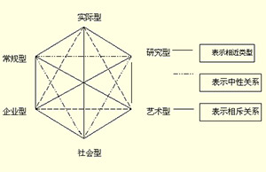

首页
网站说明
心理测试
关于我们
•
联系我们
•
隐私条款
•
友情链接
•
广告合作
推荐
爱情
个性
趣味
健康
专业
付费
爱情类型测试
爱与喜欢测试

霍兰德职业兴趣测试
虚拟梦境测试
测测你性格中潜藏的危机
标准性向测试
美国的哈佛性向测试提到，伟大的灵魂是雌雄同体的，只有同时拥有两性特质，才能更好的理解男性与女性，更好的与真男人与女汉子沟通。你了解自己的性取向吗？来做一个国内标准的性取向测试吧。看看你是不是存在同性恋的潜质？还是更适合与同性来个精神交往？别紧张，多多了解自己其...
参与人数：47584
题量： 15
潜意识的你是什么样
潜意识，是指人类心理活动中，无法意识或没有意识到的部分，是人们“已经发生但并未能感知的心理活动”。然后我们往往可以通过人的基本形态来揣测潜在的自我，如借助我们如何看待自己和他人，如何看待我们生活中日常活动的意义，我们所做出的关乎生死的快速判断和决定能力，以及我...
参与人数：37975
题量： 20
FPA性格色彩测试
用“红”、“黄”、“蓝”、“绿”四种颜色来说明人的性格类型，解读“性格色彩密码”，以“色”识人，增加你对人生的洞察力，修炼个性，掌握自己的命运。人的性格是复杂的，一般情况不仅仅受一种色彩来支配，四种色彩的比例才是对性格最完整的描述，只不过通常其中的一或两种色...
参与人数：26667
题量： 13
测测你是匆匆那年里的谁
时光飞逝，曾经美好的青春犹如一场梦。匆匆那年这部经典的电视剧是否也唤起了我们对青春的回忆。陈寻是少年时代的灿烂干阳，身上的耀眼光芒，照亮了一整个青春；方茴是春天里遗落的一朵丁香，在消逝的青春中温柔坚强的悄悄绽放；赵烨笑容灿烂的江湖少年，哪怕回首望去，岁月一片...
参与人数：17828
题量： 27
你适合在哪个城市工作
在职业生涯规划的过程中，往往要考虑很多因素，其中第一个因素是要考虑地域。这也是不少人容易忽略的。很多人都希望能够去大城市，无论是做什么样的工作，只要能够留下来，就觉得自己离成功已经近了很多，以为将来的工作还可以慢慢地调整。但是你是否发现有的人在一个地方工作会...
参与人数：22997
题量： 12
职业锚测试
职业锚强调个人能力、动机和价值观三方面的相互作用与整合，是职业决策时最稳定不变的因素，一般情况下一旦确定就很难改变。锚，是使船只停泊定位用的铁制器具，职业锚，实际就是人们选择和发展自己的职业时所围绕的中心，是指当一个人不得不做出选择的时候，他无论如何都不会放弃...
参与人数：33513
题量： 32
情绪识别能力测试
表情是世界通用语。不分国界不分种族不分性别，大家通用一套表情。可读懂表情不是一个简单的技术活，它体现了你情商的重要指标：共情力。所以，以下10道题，你能答对多少，来练练手吧！
参与人数：23498
题量： 10
脸盲症测试
电影电视剧看多了，你是不是觉得自己来来去去看到的都是那么几个演员？是不是也想大声呐喊：救救我吧，我分不清了！脸盲症又称为“面孔遗忘症”。该症状表现一般分为两种：看不清别人的脸；对别人的脸型失去辨认能力。那么今天，让我们来看看你明星脸盲症的级别吧！
参与人数：55339
题量： 12
女生：你是红楼梦里的谁？
金陵十二钗，每一钗都有属于自己的故事。《红楼梦》中的人物个性鲜明，并且独具特色和魅力。想知道现实生活中的你更像是红楼梦中的谁吗？测试包括十二种结果，呈现的题目会根据你的选择略有不同，预计你需要完成6 - 8题，用时1分钟，金陵十二钗，你是哪一钗？女生专用，男...
参与人数：22705
题量： 26
测测你是三国中的谁
东汉末年，世分三国，烽火连天，战不休。正所谓乱世铸就英雄，三国正是这样一个英雄辈出的时代。每给人心中都有一个英雄梦，虽不能身临其境，但通过这个测试，你或许可以找到三国中，你的前世。是那亦雄亦奸 、功过是非任评说的曹操？还是那鞠躬尽瘁、 出师未捷万古哀的诸葛亮...
参与人数：38816
题量： 35